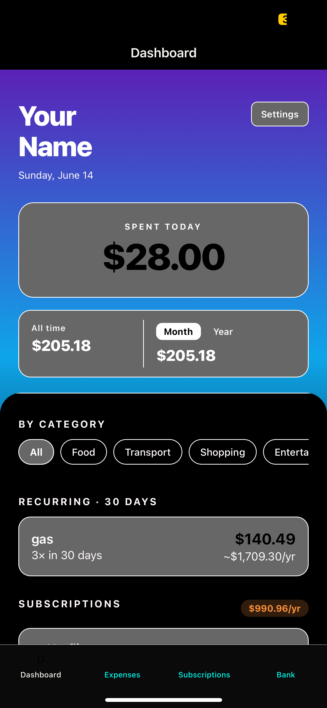

SEC EDGAR Financial Data Pipeline
ETL pipeline that bulk downloads 10 years (1.82GB) of SEC EDGAR financial data across 40 quarterly ZIP files. Files are extracted and renamed locally, filtered for R&D, Net Income, and Revenue, then loaded into MySQL for downstream analysis.
num.txt and sub.txt from each zipfinancial_data and metadata tablesaggregated_stock_dataqueries_edgar.sqledgbatch_DL&EXT_SQL.py
- Python — pandas, zipfile, requests, SQLAlchemy
- MySQL
R&D Expense Spikes Predict Short-Term Price Declines
R&D expense spikes predict short-term price declines with 55–68% accuracy across 1,404 public companies. 1.82GB SEC EDGAR data, ETL from zip to MySQL to Python, enriched with yfinance price data.
| R&D Spike Magnitude | Companies | Drop Rate | |
|---|---|---|---|
| 0 – 10% | ~280 | 55.6% | |
| 10 – 20% | ~280 | 61.1% | |
| 20 – 50% | ~280 | 67.3% | |
| 50 – 100% | ~280 | 68.5% | |
| 100%+ | ~284 | 66.1% |
Tracking post-spike short-term price behavior across all bands suggests a systematic and repeatable market inefficiency.
- Ranking the first 10 companies by spike percent
- Sorting all companies' average spike percentage into 4 buckets
- Comparing the spike percentage to the prior filing date's spike percentage
- Finding the running average of spike percentage per company
- Finding the max spike percentage per company
- Stock price window of 30 days may predate 10-K filings
- Only 3 quarters of data available — Q4 not filed in 10-K
- Data range limited to 2014–2023, not live
- Some data lost due to ticker symbol resolution issues
A version addressing all listed limitations is planned.
- Python — yfinance, zipfile, requests, SQLAlchemy
- MySQL
Personal Finance Tracker
Showcasing a fulling working SQLite Database with a mobile app.
A mobile expense and subscription tracker with a FastAPI backend. Full CRUD for expenses and subscriptions, automatic recurring expense detection, and spending summaries broken down by day, month, year, category and yearly projections.

- Full CRUD for expenses and subscriptions
- Automatic subscription management
- Spending summaries by day, month, year, and all-time
- Category breakdowns across all transactions
- Recurring expense detection with annualized projections
GET /expenses — retrieve all recorded expensesPOST /expenses — add a new expense entryPUT /expenses/{id} — update an existing expenseDELETE /expenses/{id} — remove an expenseGET /subscription · POST · PUT · DELETE — full subscription management- Python — FastAPI, SQLAlchemy, APScheduler
- SQLite
S&P 500 Anomaly Detection
Real-time anomaly detection across all S&P 500 stocks using Z-Score and Isolation Forest, with AI-generated summaries explaining the likely cause of each anomaly using recent news. Deployed as a full-stack application with a FastAPI backend and React frontend.
The dashboard shows all high confidence anomalies with their return and volume Z-scores, signal type, and AI-generated summary. Click any row to expand the analysis.
Launch LIVE APP →
- Python — pandas, yfinance, scikit-learn
- FastAPI · Render
- React · Vercel
- Claude AI (Anthropic)
- NewsAPI